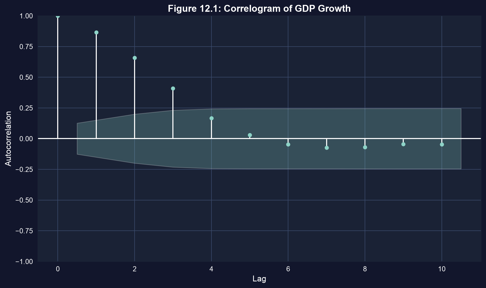
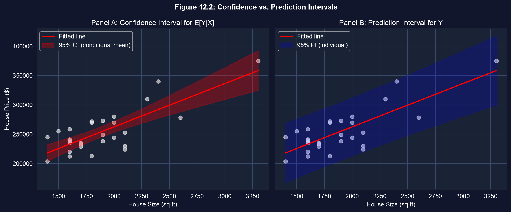
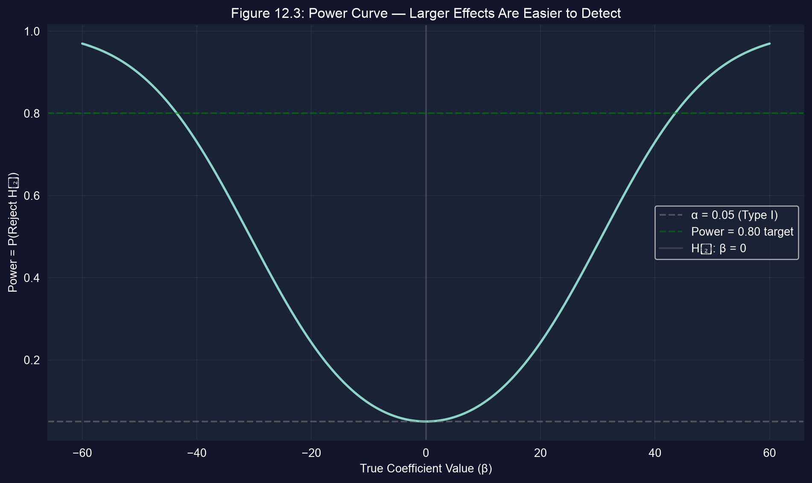

第I幕 · 緊張
古典的な標準誤差の公式は、誤差が独立で等しく散らばっていると仮定します。現実のデータが そのとおりに協力することはめったにありません。横断面データは不均一分散であり、 グループ化されたデータはクラスター化されており、時系列データには自己相関があります。
これら三つのいずれの場合でも、OLSの係数は不偏のままです — 直線は依然として正しいのです。 崩れるのは標準誤差です。それに基づいて構築される\(t\)統計量、\(p\)値、区間が信頼できなくなります。 本章ではまず不確実性を修復し、その後、回帰が何を予測でき、何を予測できないのかを問います。
係数はそのまま残る。本章は、それらの周りの数値をどう信頼するかについてです。
第II幕 · 調査
OLSの点推定値は三つのいずれの場合でも不偏です。補正が必要なのは標準誤差だけです。
vcov="HC1"!pip install -q pyfixest # pyfixest isn't preinstalled in Colab (-q = quiet)
import pandas as pd # tabular data
import pyfixest as pf # pyfixest → OLS with robust SEs, R-style formulas
url = "https://raw.githubusercontent.com/quarcs-lab/data-open/master/AED/AED_HOUSE.DTA"
data = pd.read_stata(url) # 29 Davis, CA house sales (1999)
f = "price ~ size + bedrooms + bathrooms + lotsize + age + monthsold"
default = pf.feols(f, data=data) # classical SEs (assume homoskedasticity)
robust = pf.feols(f, data=data, vcov="HC1") # SAME coefficients, heteroskedastic-robust SEs1平方フィート増えるごとに販売価格はおよそ$68の価値があり、どちらの方法でも強く 有意です。sizeのロバスト標準誤差は15.36で、デフォルトの15.39と同程度です（\(p = 0.0002\)）。
最大の調整はbathrooms（ロバスト標準誤差が約23%大きい）とlotsize（約26% 小さい）ですが、どちらの方法でも両者とも有意から遠いままです。
経験則：ロバスト標準誤差が約30%以上動くなら、不均一分散は本物です — ロバストな方を報告しましょう。

米国の実質一人当たりGDP成長率のコレログラム（T = 241）。陰影のついた帯の外側の棒は統計的に有意である。ラグ1の正の値は、高成長の四半期が集中することを意味する（各値は前年同期比の成長率なので、隣り合う値は重なり合う）。
正の自己相関は、連続した観測値が独立でないことを意味します — したがって、標本数が示唆するよりも少ない情報しかありません。
import numpy as np # numerics
from statsmodels.regression.linear_model import OLS as smOLS # for HAC covariance
url = "https://raw.githubusercontent.com/quarcs-lab/data-open/master/AED/AED_REALGDPPC.DTA"
growth = pd.read_stata(url)["growth"].dropna() # real GDP-per-capita growth series
n = len(growth); m = int(0.75 * n**(1/3)) # Newey–West lag rule m ≈ 0.75·T^(1/3) → 4
se_default = growth.std() / np.sqrt(n) # assumes independence (too small here)
fit = smOLS(growth, np.ones(n)).fit( # intercept-only model = the mean growth rate
cov_type="HAC", cov_kwds={"maxlags": m}) # HAC-corrected covariance
print(se_default, fit.bse.iloc[0]) # HAC SE is LARGER — honest about serial dependence同じ当てはめた直線が、まったく異なる精度で、二つの異なる問いに答えます。
\[\underbrace{E[Y\mid X^*]}_{\text{平均的な結果}} \qquad\text{vs.}\qquad \underbrace{Y\mid X^* = E[Y\mid X^*] + u^*}_{\text{一つの個別の結果}}\]
個別の結果は、余分で還元不可能な項\(u^*\)を伴います — 平方根の下にある「\(1+\)」であり、無限のデータがあっても決して縮小しません。
from scipy import stats # t-distribution for interval widths
fit = pf.feols("price ~ size", data=data) # simple regression on size
x = data["size"].values; xbar = x.mean() # ingredients for the SE formulas
Sxx = ((x - xbar)**2).sum(); n = len(data)
s_e = np.sqrt((fit._u_hat**2).sum() / (n - 2)) # RMSE — the irreducible noise floor s_e
pred = fit.predict(newdata=pd.DataFrame({"size": [2000]}))[0] # point prediction at 2000 sq ft
t = stats.t.ppf(0.975, n - 2) # 95% critical value, df = n − 2
se_cm = s_e * np.sqrt(1/n + (2000 - xbar)**2 / Sxx) # conditional-MEAN SE
se_pi = s_e * np.sqrt(1 + 1/n + (2000 - xbar)**2 / Sxx) # INDIVIDUAL SE (note the leading 1)
print(pred, t*se_cm, t*se_pi) # point, CI half-width, PI half-width
パネルA：平均的な2{,}000平方フィートの価格に対する狭い95%信頼区間。パネルB：一軒の住宅に対するはるかに広い95%予測区間。漏斗はデータの中心から離れるほど広がる。
2{,}000平方フィートの住宅の場合：点 ≈ $263k · 信頼区間 ≈ [$253k, $272k] · 予測区間 ≈ [$213k, $312k]。データが増えると信頼区間は狭まるが、予測区間にはほとんど影響しない。
いかなるロバスト標準誤差も悪い標本を修復できません。その標本が、あなたの関心のある母集団を代表しているかを常に問いましょう。
第III幕 · 解決
古典的な仮定の下では、OLSはGauss–Markov定理によりBLUE（最良線形不偏推定量）です。 均一分散または独立性が崩れると、OLSは不偏のままですが、もはや最も有効ではありません — 実行可能GLS（FGLS）の方がより精密になり得ます。
実務では、ほとんどの応用研究はOLSとロバスト標準誤差を用い続けます。効率の損失は小さく、 定式化を誤ったGLSの重み付けモデルは、益よりも害をもたらすことがあるからです。
デフォルトはOLS + ロバスト標準誤差。FGLSに頼るのは、誤差分散のモデルを信頼できるときだけにしましょう。
正規近似を信頼する代わりに、復元抽出でデータを再標本化し、約1,000回それぞれ 再推定し、得られた係数の2.5パーセンタイルと97.5パーセンタイルを95%信頼区間として 読み取ります。
ブートストラップは正規性を仮定せず、扱いにくい統計量にも使えます — この\(n = 29\)軒の住宅のような小標本に理想的です。
| 判断 | \(H_0\)が真 | \(H_0\)が偽 |
|---|---|---|
| \(H_0\)を棄却する | 第一種の過誤（\(\alpha\)） | 正しい — 検出力 |
| 棄却しない | 正しい | 第二種の過誤（\(\beta\)） |
\(\alpha\)を厳しくすると偽陽性は減りますが、\(\beta\)は上がります — 検出される真の効果が減ります。 検出力 \(= 1-\beta\)は、真の効果を捉える確率です。
\(n=29\)だけでは、bedroomsの検定は棄却できませんでした（\(p=0.773\)） — おそらく第二種の見逃しであり、「効果なし」の証明ではありません。

\(n=30\)、標準誤差 \(=15\)、\(\alpha=0.05\)における検出力曲線。検出力は\(\beta=0\)で\(\alpha\)に等しく、真の効果が大きくなるにつれて1へ上昇する。
from scipy import stats; import numpy as np # distributions + numerics
alpha, se, n = 0.05, 15, 30 # significance, hypothetical SE, sample size
tcrit = stats.t.ppf(1 - alpha/2, df=n - 1) # two-sided critical value
betas = np.linspace(-60, 60, 500) # grid of true effect sizes to evaluate
ncp = betas / se # non-centrality: effect in SE units
power = 1 - (stats.t.cdf(tcrit - ncp, n - 1) # P(reject | true β) under the alternative
- stats.t.cdf(-tcrit - ncp, n - 1))
# here power reaches the 0.80 target only around |β| ≈ 43.5 — small effects need a bigger n
print(betas[(betas > 0) & (power >= 0.80)].min())vcov=キーワード一つ、あるいは時系列の平均に対する切片のみのHACの当てはめです。